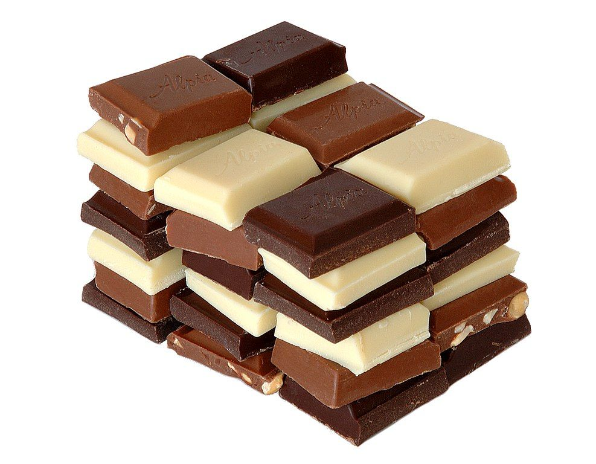
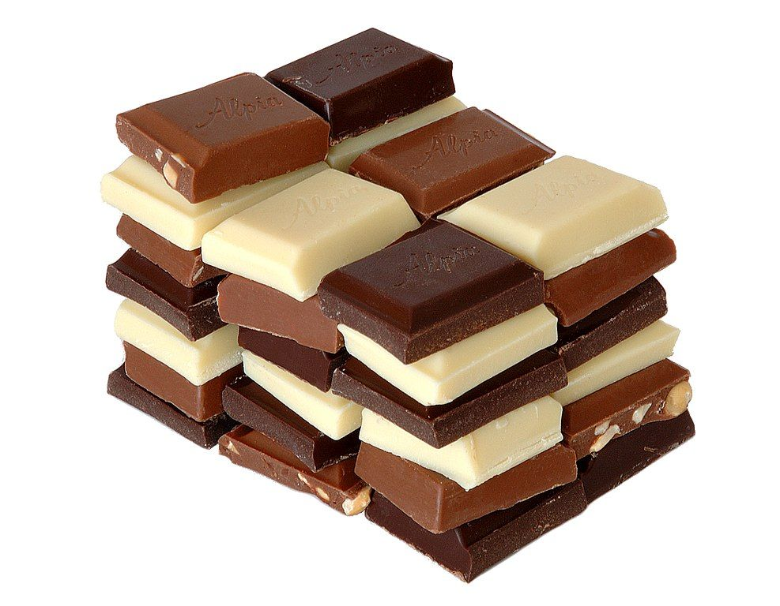

Chokladprovning
Nedan hittar du lite svar på de frågor du kanske har kring chokladprovningen, som vad det är, hur det går till och kostnaden. Vill du sedan boka en tid så går du till vårt bokningsformulär.
Vad är en chokladprovning?
Chokladprovning påminner om vinprovning. Man tittar, doftar och smakar för att göra en bedömning av kvalitet, stil och ursprung. hos oss handlar det om att lära dig mer om choklad och dess historia, olika bönor och kvalitet, samt smaka på olika sorterrs choklad med olika kakaohalt.
Hur går det till?
En chokladprovning inleds vanligtvis med en presentation av chokladens historia och tillverkningsprocess. Därefter får deltagarna smaka på ett antal olika sorter av choklad och prova att beskriva smakerna. Under provningen leds deltagarna genom olika smaker och aromer, och får lära sig mer om vad som påverkar chokladens smak och kvalitet. Provningen avslutas med en diskussion och en möjlighet att köpa chokladen man provat.
Vad bör jag tänka på?
Det är bra att ha ätit en lättare måltid innan du kommer så du erkligen kan njuta och känna smaken av chokladen utan att vara hungrig. undvik att ha på dig starka dofter då det kan försämra smakupplevelsen.
Tider och priser
Chokladprovning sker kvällstid måndag och onsdag mellan kl.19 och 21. Max andra på varje provning är 12st personer. Pris per person är 525kr.

 
